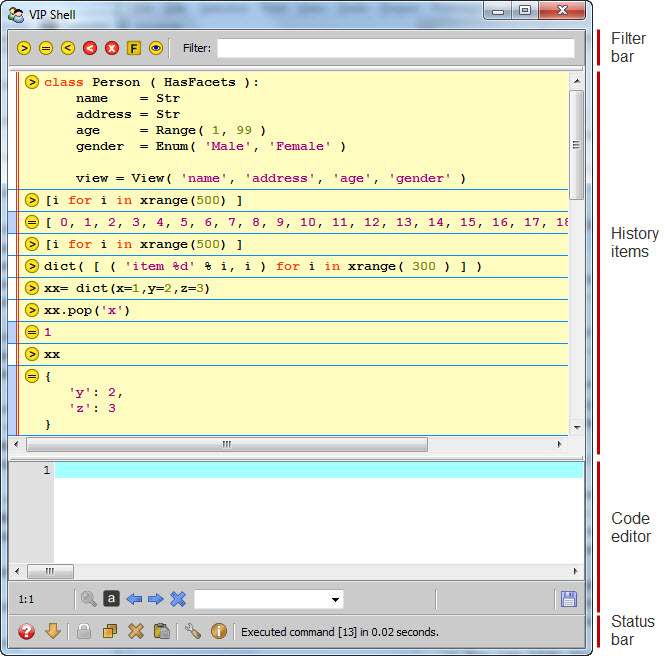

The VIP (Visual Interactive Python) Shell is a Facets editor that allows you to interact with your application using a graphical Python interpreter shell. The shell view is divided into four main areas as shown in the following figure:
The main purpose of each area is as follows:
The VIP Shell is different from some Python interpreter shells in that entry of Python code and expressions occurs in a different area (code editor) than the display of the results (history items).
There are several ways you can use or invoke the VIP Shell:
You can use it just like any other Facets editor in your application. The value it edits should be a dictionary whose contents form the set of local variables exposed and manipulated by the shell.
You can use it via the VIPShell tool, a tool framework component that includes a VIP Shell editor view and allows you to connect various shell elements to other tool components. The VIPShell tool can also be invoked as a stand-alone application:
python -m facets.extra.tools.vip_shell
You can use the VIPShell tool as a debugging aid by setting the FACETS_DEV environment variable to 1. Doing so enables a Facets run-time feature that displays a VIP Shell window whenever:
You can use this feature to quickly explore the run-time state of your application.
Although the VIP Shell is just one of many Facets editors, its capabilities are extensive enough that we have split information on using it into several sections: